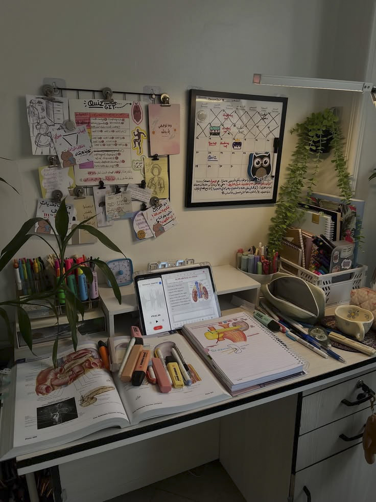

Organiser, apprendre, comprendre et réussir !
Cette technique consiste à alterner des périodes de travail concentré et des pauses.
| Étape | Durée |
|---|---|
| Travail | 25 minutes |
| Pause | 5 minutes |
| Après 4 cycles | Pause de 15 à 30 minutes |
Éloignez-vous des distractions extérieures en mettant un casque et en écoutant des sons relaxants . Ces ambiances sonores peuvent vous aider à vous détendre, à vous isoler du bruit environnant et à mieux vous concentrer sur vos révisions.
cheminée
Pluie:
lofi music:
Un bureau propre et bien organisé favorise la concentration et la motivation.
